I loaded the Housing dataset that comes with Orange (housing.tab) in the File widget, the same way the sample workflow does. It has 506 rows, one per Boston area town, and 14 numeric columns with no missing values. MEDV, the median home value in $1000's, comes in as the target.
The handout says this step doesn't need to be documented, so I'll keep it short. I looked at the data with a Data Table, a Box Plot and a Distributions widget, and marked those three on the canvas as the initial data exploration.
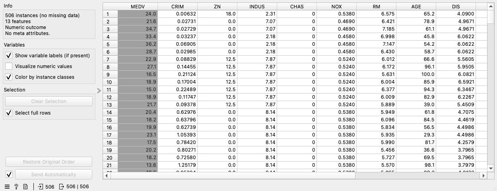
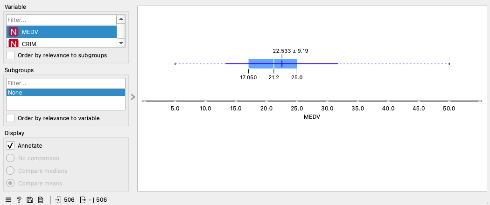
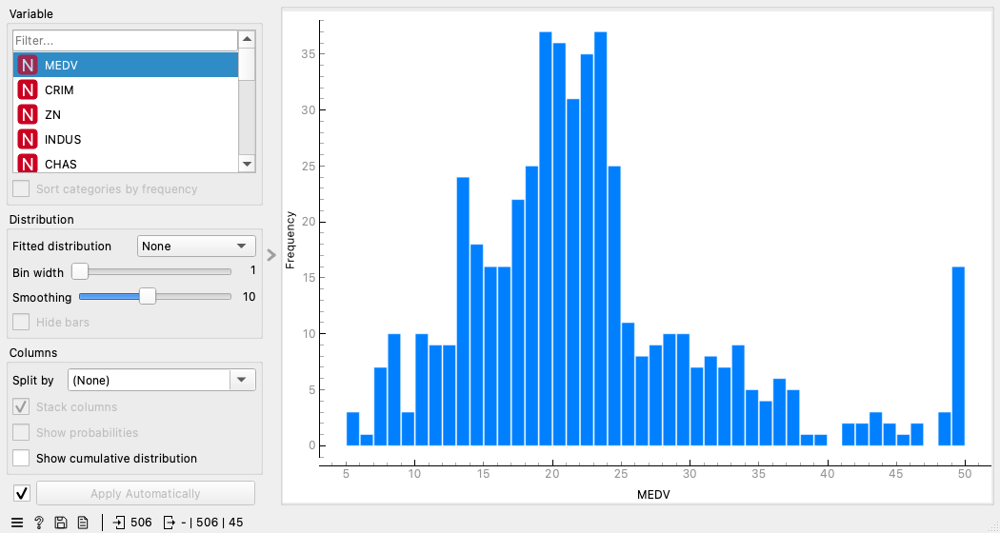
MEDV goes from 5 to 50 with a mean of 22.5. One thing that stood out is the bar at exactly 50: 16 towns have a MEDV of 50.0, which looks like the values were capped there. That comes up again in step 4.
I connected File to Select Columns and moved MEDV from the Target box to the Features box, so MEDV and all the other columns are features. Then I connected Select Columns to Correlations, and Correlations to a Scatter Plot.
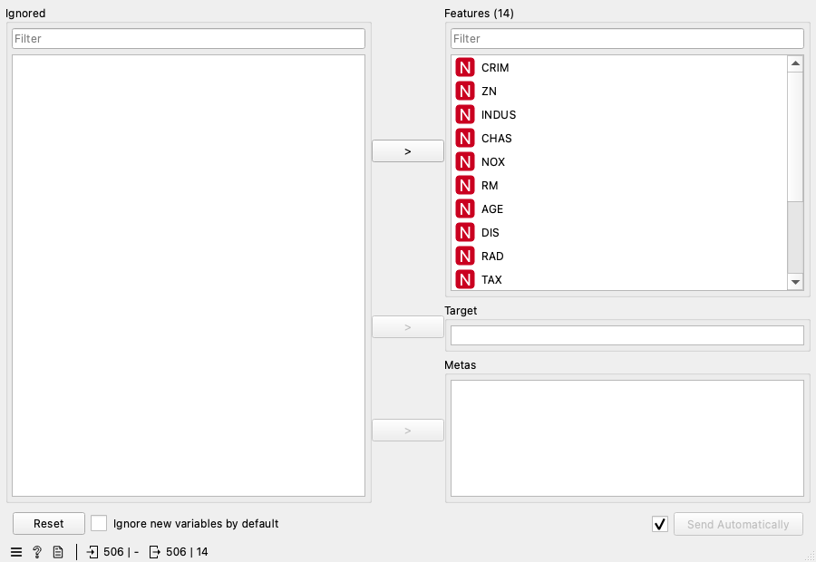
In the Correlations widget I typed MEDV in the filter box so it only lists the pairs that include MEDV.
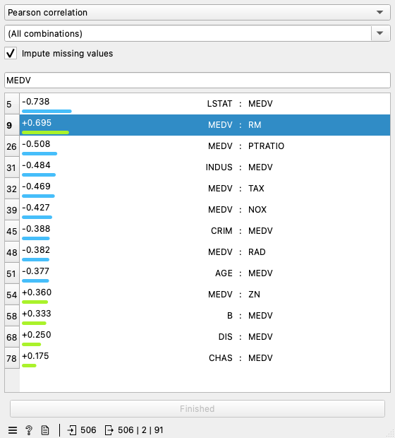
| Attribute | What it is | Correlation with MEDV |
|---|---|---|
| RM | rooms per home | +0.695 |
| ZN | large-lot zoning | +0.360 |
| B | B index | +0.333 |
| DIS | distance to jobs | +0.250 |
| CHAS | on the Charles River | +0.175 |
| AGE | old homes | -0.377 |
| RAD | highway access | -0.382 |
| CRIM | crime rate | -0.388 |
| NOX | air pollution | -0.427 |
| TAX | property tax rate | -0.469 |
| INDUS | industry | -0.484 |
| PTRATIO | pupil-teacher ratio | -0.508 |
| LSTAT | % lower status | -0.738 |
The pair with the highest positive correlation is MEDV and RM, with a Pearson correlation of +0.695.
RM is the average number of rooms per home, so towns with bigger homes tend to have higher home values. I also noticed that the strongest correlation overall is negative: LSTAT and MEDV at -0.738. It is at the top of the list in Orange because the widget sorts by strength and ignores the sign.
With the MEDV and RM pair selected in Correlations, the Scatter Plot shows those two attributes.
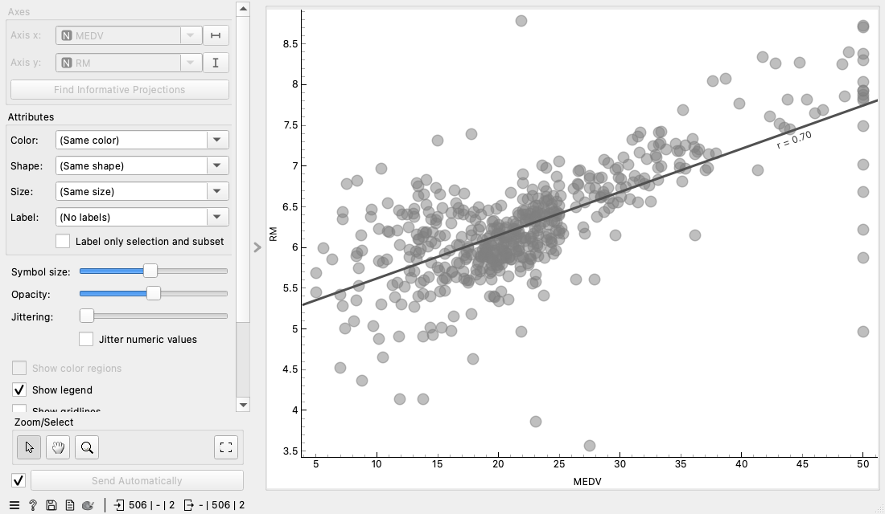
Do you think the Pearson correlation effectively captures the relationship between the two selected attributes? Why or why not?
Mostly yes, but not completely. The points do follow a roughly straight, upward band, which is the kind of relationship Pearson is made to measure, and +0.70 is a fair summary of it: a clear positive relationship that is far from perfect. A few things in the plot are not captured by that one number though:
So I'd say Pearson gives the right direction and a reasonable strength for this pair, but it hides the cap at 50 and the outliers, which you only see by looking at the plot.
For comparison I also clicked on the strongest pair in the list, LSTAT and MEDV. Here the answer is clearly no.
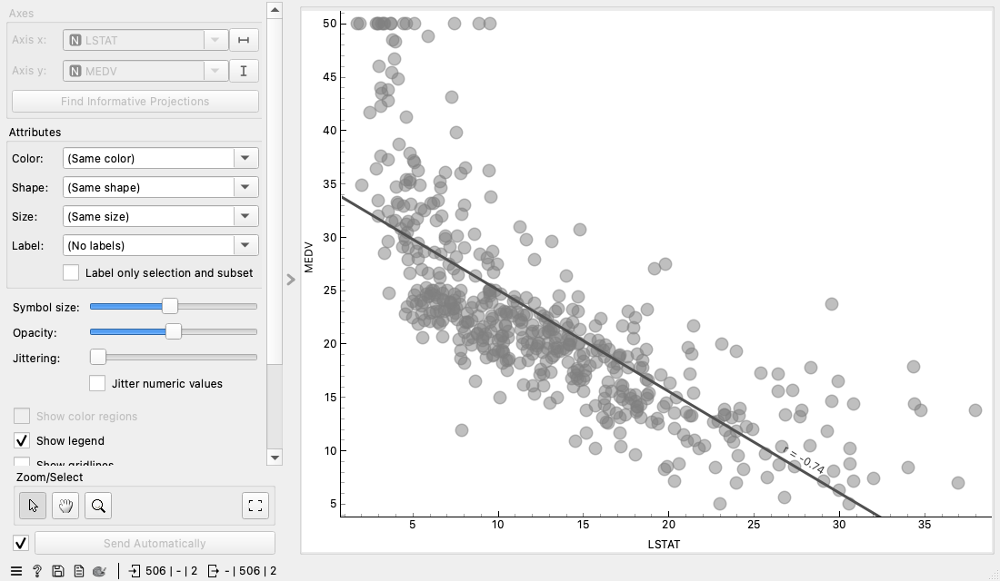
The points follow a curve, not a line. MEDV drops fast when LSTAT is low and then flattens out. Pearson only measures straight line relationships, so -0.74 understates how closely these two are tied together. The straight regression line misses at both ends. This is the pair I used for step 5.
The handout says to take the log of the feature most correlated to MEDV. Going by strength, that is LSTAT (-0.738), so I connected Select Columns to a Formula widget and made a new numeric column:
log2_LSTAT = log2(LSTAT)
Since step 3 asked for the highest positive pair, which was RM, I also
added log2_RM = log2(RM) in the same widget so I could compare
both.
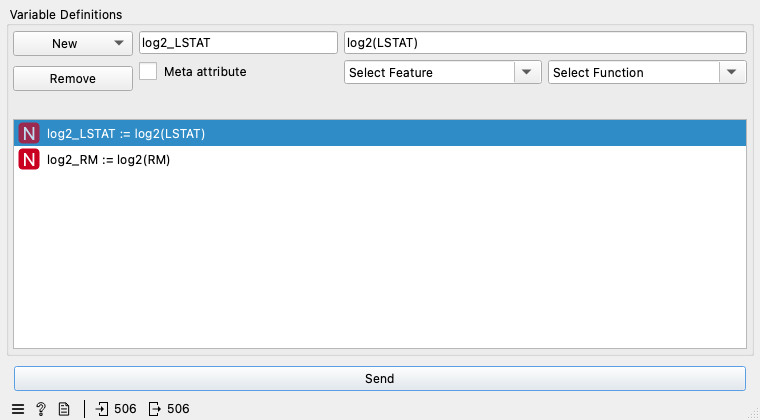
Then I connected Formula to a second Correlations widget and a second Scatter Plot, filtered on MEDV again, and selected the most correlated pair that includes MEDV.
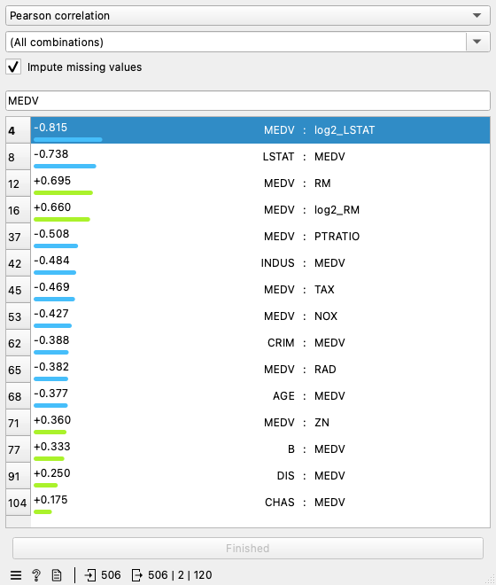
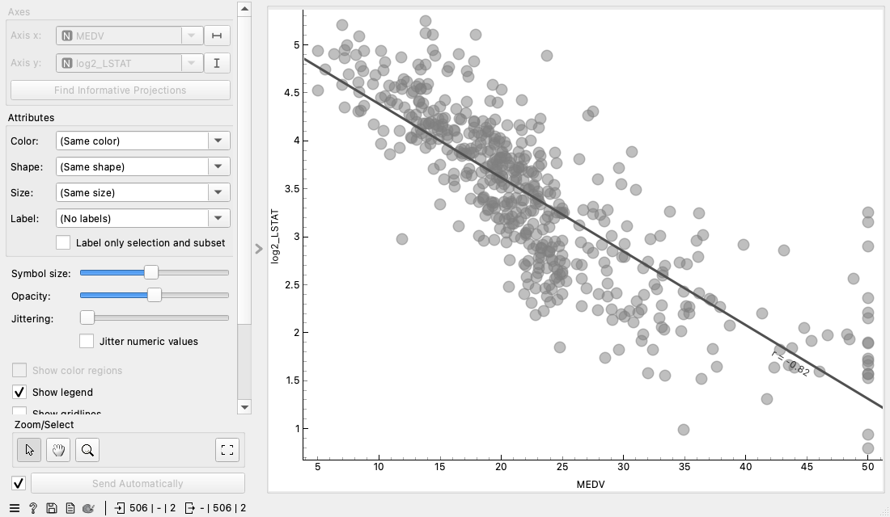
| Feature | Original | log2 of it | Change |
|---|---|---|---|
| LSTAT | -0.738 | -0.815 | stronger |
| RM | +0.695 | +0.660 | weaker |
What do you notice? Describe what you now see in both widgets compared to step 4 and explain the implications of the newly constructed feature.
In Correlations: the new feature goes straight to the top of the list. MEDV and log2_LSTAT have a correlation of -0.815, compared with -0.738 for plain LSTAT, which is now second. In step 4 nothing was above 0.74 in strength. The other pairs did not change, because I only added columns and did not touch the old ones. log2_RM went the other way: its correlation is +0.660, a little lower than RM's +0.695.
In the Scatter Plot: the curve is gone. With plain LSTAT the points bent away from the line at both ends. With log2_LSTAT they fall along a fairly straight band from top left to bottom right, and the regression line runs through the middle of them the whole way. The capped towns at MEDV = 50 are still there as a vertical line on the right.
Implications:
I connected File to a Discretize widget and set only CRIM to equal frequency with 2 intervals. All the other attributes are left as keep numeric. Equal frequency with 2 intervals splits at the median crime rate (0.25651), so each group has 253 towns.
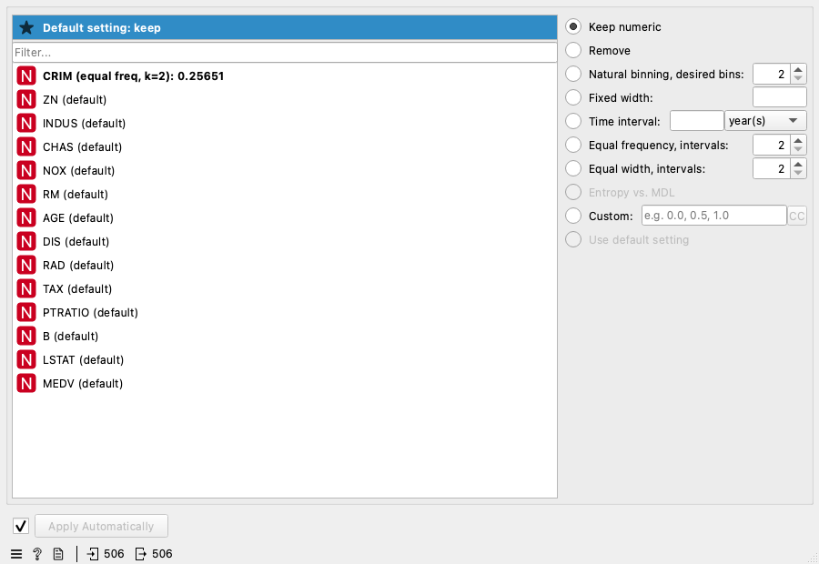
Then I sent that to a Distributions widget and looked at MEDV split by CRIM.
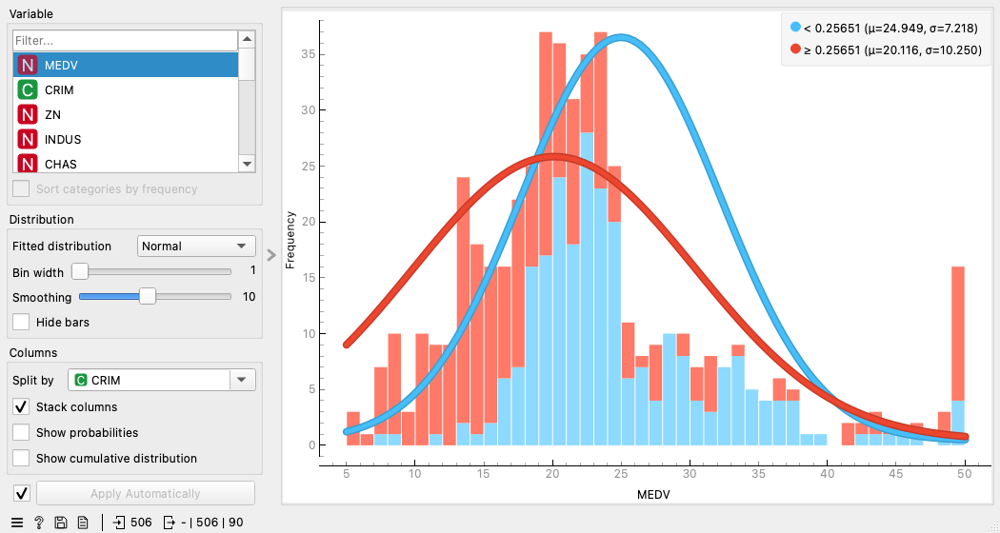
| CRIM group | Towns | Mean MEDV | Median MEDV | Std. dev. |
|---|---|---|---|---|
| < 0.25651 (low crime) | 253 | 24.95 | 23.1 | 7.23 |
| ≥ 0.25651 (high crime) | 253 | 20.12 | 17.9 | 10.27 |
What do you notice? How can one interpret this result?
The two groups have clearly different distributions. The low crime towns (blue) sit further to the right, with a mean MEDV of 24.9 against 20.1 for the high crime towns (red). That is a gap of about $4,800 in median home value. The low crime group is also narrower and looks more like a bell curve. The high crime group is more spread out (standard deviation 10.3 against 7.2) and almost all of the cheapest towns, the ones under about 13, are in it.
The interpretation is that towns with higher crime rates tend to have lower home values. It is not a clean split though. The two distributions overlap a lot, and some high crime towns are expensive, including most of the towns capped at 50. So crime rate tells you something about home value on average, but it does not decide it for any one town. It also does not prove that crime causes lower prices, since other things like LSTAT go along with both.
I connected the same Discretize widget to a Box Plot, chose MEDV as the variable, CRIM as the subgroup, and set it to compare means.
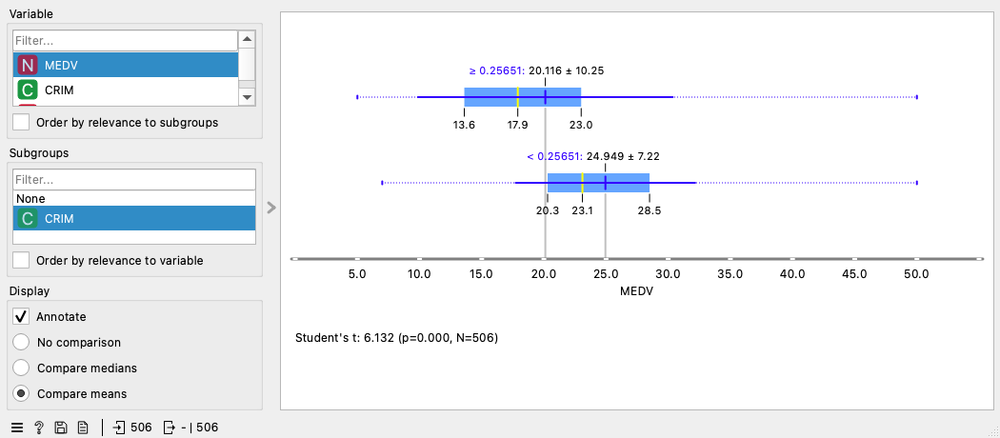
What is the value of the t statistic? What does that tell us about the data? Assume alpha = 0.05.
Student's t = 6.132, with p = 0.000 as shown in Orange (so p < 0.001) and N = 506.
The null hypothesis is that the mean MEDV is the same in low crime and high crime towns. The p-value is far below 0.05, so I reject it. A t of 6.13 means the difference between the two means (24.95 and 20.12) is about 6 standard errors wide, which would almost never happen by chance if the two groups really had the same mean. So the difference in home values between low and high crime towns is statistically significant. It tells us the gap is real, but like in step 6 it does not tell us that crime is the cause.
I added a new Discretize widget connected to File, set only RM to equal frequency with 2 intervals and kept everything else numeric. The split is at 6.2085 rooms, with 253 towns in each group. I fed that to a new Box Plot, grouped by RM, and clicked through every attribute to read its t and p-value.
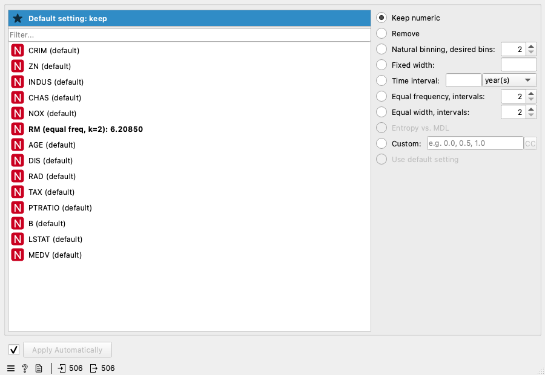
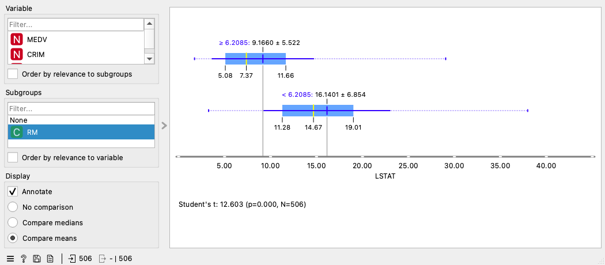
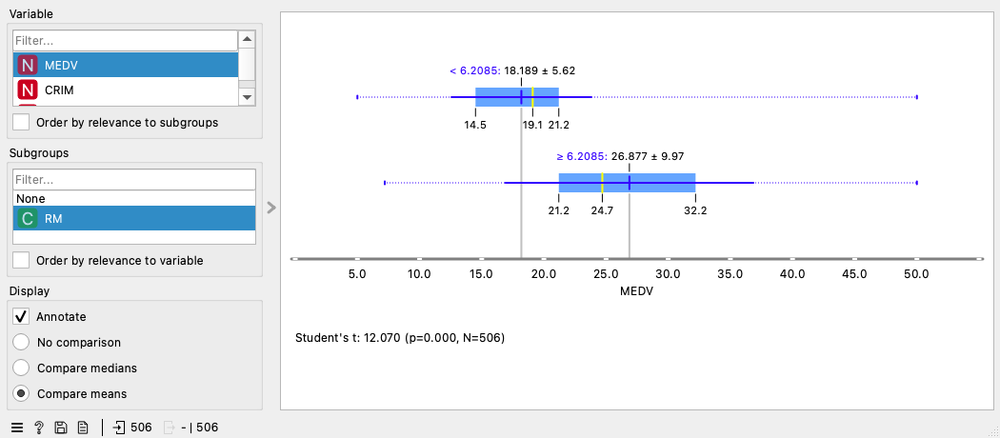
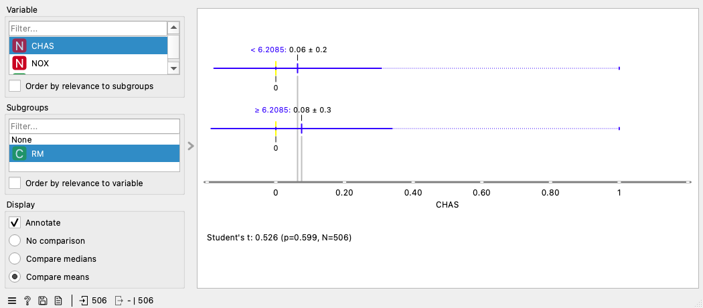
| Attribute | Mean, RM < 6.2085 | Mean, RM ≥ 6.2085 | Student's t | p-value | p < 0.05? |
|---|---|---|---|---|---|
| LSTAT | 16.14 | 9.17 | 12.603 | < 0.001 | Yes |
| MEDV | 18.19 | 26.88 | 12.070 | < 0.001 | Yes |
| ZN | 4.52 | 18.21 | 6.910 | < 0.001 | Yes |
| INDUS | 12.96 | 9.31 | 6.221 | < 0.001 | Yes |
| PTRATIO | 18.93 | 17.98 | 5.081 | < 0.001 | Yes |
| NOX | 0.58 | 0.53 | 5.028 | < 0.001 | Yes |
| AGE | 74.44 | 62.71 | 4.801 | < 0.001 | Yes |
| DIS | 3.43 | 4.16 | 3.939 | < 0.001 | Yes |
| CRIM | 4.63 | 2.60 | 2.672 | 0.008 | Yes |
| TAX | 428.08 | 388.40 | 2.669 | 0.008 | Yes |
| B | 349.14 | 364.21 | 1.865 | 0.063 | No |
| RAD | 9.97 | 9.13 | 1.085 | 0.279 | No |
| CHAS | 0.06 | 0.08 | 0.526 | 0.599 | No |
Attributes with a p-value lower than 0.05: LSTAT, MEDV, ZN, INDUS, PTRATIO, NOX, AGE, DIS, CRIM, TAX (10 of the 13).
The ones that are not below 0.05 are B (p = 0.063), RAD (p = 0.279), CHAS (p = 0.599).
Can we say all these are statistically significant? Why or why not?
Not all of them, at least not with the same confidence. Each one passes on its own, but I ran 13 tests, not one. With alpha = 0.05 every test has a 5% chance of a false positive, so across 13 tests the chance of getting at least one by luck is about 49%, not 5%. This is the multiple comparisons problem.
One way to fix it is the Bonferroni correction, which divides alpha by the number of tests: 0.05 / 13 = 0.0038. With that stricter cutoff, CRIM and TAX (both p = 0.008) no longer pass. The other 8 still do, since their p-values are tiny, so I'm confident in those.
Two more things to keep in mind. First, the groups were made from RM, and RM is closely related to several of these attributes (MEDV and LSTAT especially), so those results are expected and the tests are not independent of each other. Second, statistically significant does not mean important. With 506 towns even a small difference can pass the test, so I'd still look at the size of the difference in the table before reading much into it.
Every part of the workflow is labelled with a text box and an arrow, and I renamed the widgets that appear more than once so it's clear which is which.
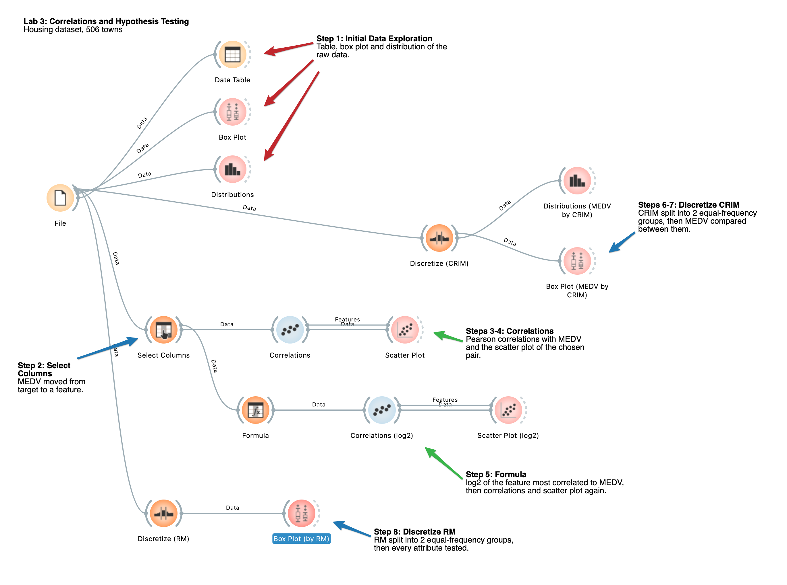